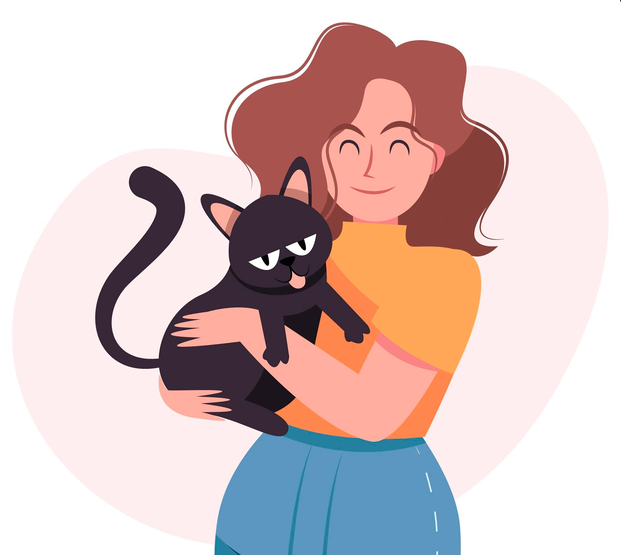
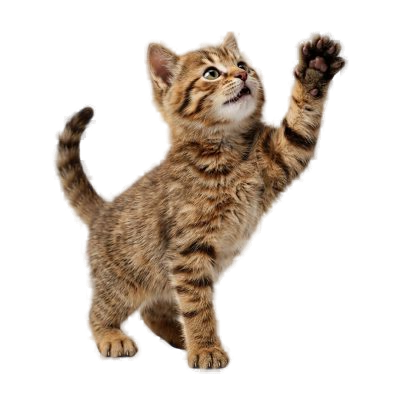

ONG de adoção de gatos com responsabilidade e carinho
Somos uma ONG, localizada em são pa-ulo, dedicada à proteção e adoção de gatos. Nosso objetivo é encontrar lares amorosos para gatos abandonados, promovendo a conscientização sobre a importância da adoção responsável e do cuidado com os animais.


A MiauDota pode te ajudar a encontrar o seu melhor amigo
Se você está procurando por um gato para sua família, na MiauDota você encontrará um animal que irá trazer alegria e companhia para sua casa. Temos diversas opções de gatos para adoção, todos muito bem cuidados.
Por que adotar um gato?
Adotar um gato é uma decisão que traz muitos benefícios, tanto para o adotante quanto para o animal. Aqui estão algumas razões pelas quais você deve considerar a adoção:
- Salva uma vida
- Oferece companhia e afeto
- É uma experiência enriquecedora
Como adotar um gato na MiauDota?
Adotar um gato na MiauDota é um processo simples e transparente. Aqui estão os passos para adotar:
- Visite nosso site e explore os gatos disponíveis para adoção.
- Contate nossa equipe para obter mais informações sobre o gato que você está interessado.
- Agende uma visita para conhecer o gato e avaliar a compatibilidade.
- Complete o processo de adoção com a documentação necessária.
Conheça nossos gatos disponíveis para adoção
Os nossos gatos estão aguardando por um lar amoroso, cada um deles com suas próprias personalidades e necessidades.
Se você é da região de São Paulo, clique no botão abaixo, contate a equipe e conheça a historia daquele que vai conquistar seu coração!
Adote um gatoContato
Estamos aqui para ajudar! Se você tiver dúvidas ou quiser saber mais sobre a adoção de gatos, entre em contato conosco.